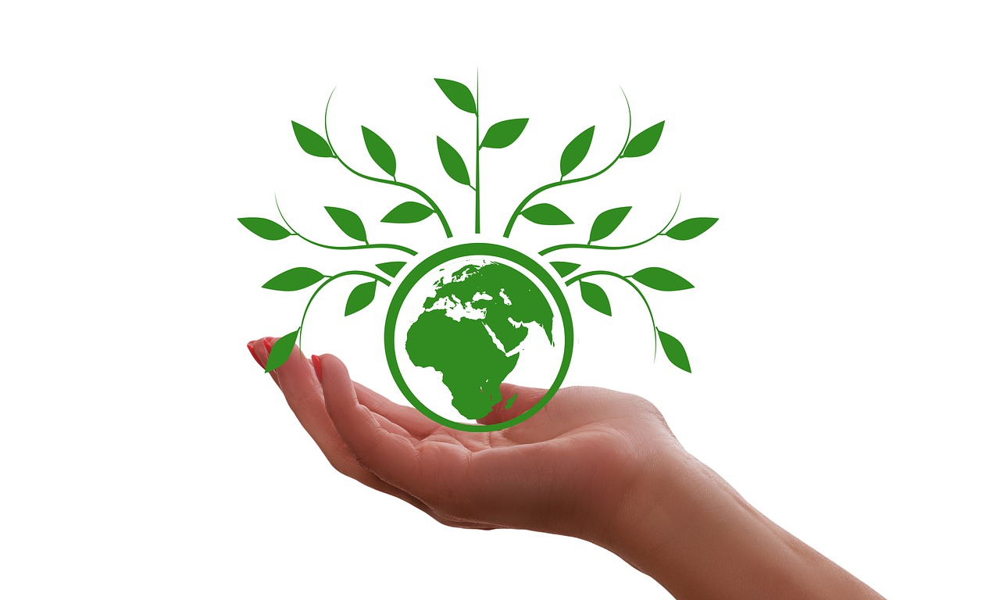

Highlighting Victories in the Battle Against Climate Change
In an era when discussions about climate change frequently center on problems and crises, it is important to recognize the incredible progress and successes in our collective battle against this worldwide concern.
